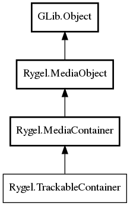

TrackableContainer
Object Hierarchy:

Description:
public interface TrackableContainer :
MediaContainer
The base class for containers that provide automatic change tracking.
Derived classes should implement the add_child() and remove_child() virtual functions to keep track of child items and child containers.
Rygel server plugins (See #RygelMediaServer) may then call rygel_trackable_container_add_child_tracked() and
rygel_trackable_container_remove_child_tracked() to add and remove items, which will then cause the #RygelContainer::container_updated
signal to be emitted.
Content:
Methods:
- public async void clear ()
- protected abstract async void add_child (MediaObject object)
Derived classes should implement this, keeping track of the child item
or child container. See the remove_child() virtual function.
- public async void add_child_tracked (MediaObject object)
Add a child object, emitting the #RygelContainer::container_updated
signal with the object.
- protected abstract async void remove_child (MediaObject object)
Derived classes should implement this, removing the child item or
child container from its set of objects. See the add_child() virtual function.
- public async void remove_child_tracked (MediaObject object)
Add a child object, emitting the #RygelContainer::container_updated
signal with the object.
- public virtual
string get_service_reset_token ()
Used to query the (persisted) service reset token from the plug-in.
- public virtual void set_service_reset_token (
string token)
Set a new service reset token.
- public virtual
uint32 get_system_update_id ()
Query the current system update ID, used for the UPnP
GetSystemUpdateID implementation.
Signals:
Inherited Members:
All known members inherited from class Rygel.MediaContainer
All known members inherited from class Rygel.MediaObject
All known members inherited from class GLib.Object
- @new
- newv
- new_valist
- get_type
- get_class
- @ref
- unref
- ref_sink
- weak_ref
- weak_unref
- add_weak_pointer
- remove_weak_pointer
- @get
- @set
- get_property
- set_property
- get_data
- set_data
- set_data_full
- steal_data
- get_qdata
- set_qdata
- set_qdata_full
- steal_qdata
- freeze_notify
- thaw_notify
- dispose
- constructed
- notify_property
- connect
- disconnect
- add_toggle_ref
- remove_toggle_ref
- bind_property
- notify
- ref_count